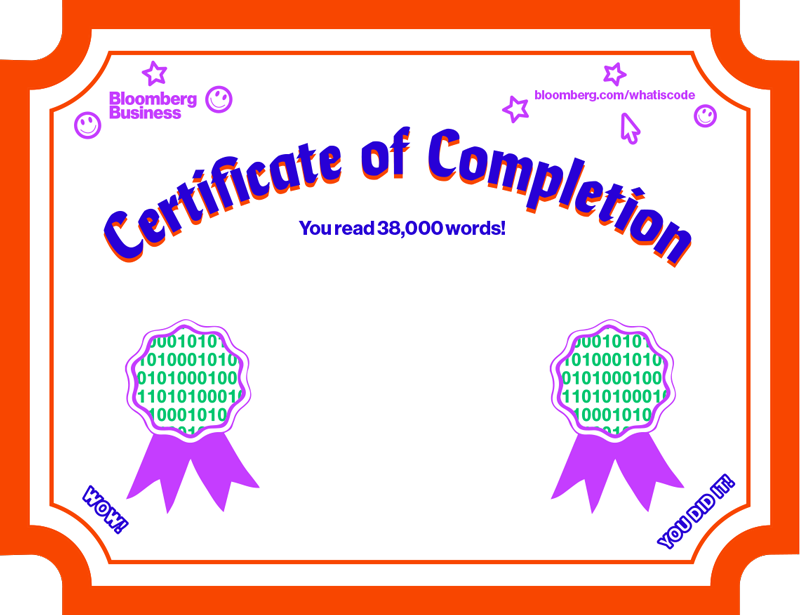

The Triumph of Middle Management
“I mean, this company will do everything imaginable to slow down shipping,” TMitTB says as the CTO winces. That’s fine; you expected this to be a stressful meeting. “First, I needed to pass everything through the security team, which was five months of review,” TMitTB says, “and then it took me weeks to get a working development environment, so I had my developers sneaking out to Starbucks to check in their code. …”
You listen, the same way you listened to people criticize the re-architecture project. But these people promised new, exciting ways of working that would cut through the problems experienced by failed technology initiatives of yore. They would be agile; they would use new tools; they would attract talent; and they would ship code. They knew this was a big company, not a startup, when they signed on. And the re-architecture is, to any casual observer, a failure.
TMitTB has, you noticed, gained weight. The CTO, who has several projects on roughly the same footing scattered across the organization, has lost weight.
“I was told I could, that I should do this right,” TMitTB says. “So that it wouldn’t need to be done again 18 months later.” He sits back in his chair, but it’s a shallow visitor chair with a lightly padded back, so any intended dramatic effect is diminished.
One of the lessons that TMitTB has tried to get across to you, the big message that matters most to him, is that code is never done; after shipping the new platform (no longer a website, this is a platform), with all its interlocking components, he and his team will continue to work on it forever. There will always be new bugs, new features, new needs. Such things are the side effects of any growth at all, and this platform is, he insists, designed to scale.
What no one in engineering can understand is that what they perceive as static, slow-moving, exhausting, the enemy of progress—the corporate world that surrounds them, the world in which they work—is not static. Slow-moving, yes, but so are battleships when they leave port. What the coders aren’t seeing, you have come to believe, is that the staid enterprise world that they fear isn’t the consequence of dead-eyed apathy but rather détente.
They can’t see how hard-fought that stability is. Where they see obstacles and intransigence, you see a huge, complex, dynamic system through which flows a river of money and where people are deeply afraid to move anything that would dam that river.
You feel some pity for the coders now. Obviously, they will inherit the earth. But in their race to the summit, they missed a lot of memos.
“I just want to ship,” TMitTB says. By which he means: “I just want to do what I was asked to do.” But so much of the company hears that as, “I just want to destroy everything I touch. For I am Kali, destroyer of best practices.”
“OK,” you say. “I understand that. Here’s what you are going to do for me.” You look at the CTO and she nods. “First, no more conferences.”
His mouth opens, then shuts.
Photographer: Joanna Mcclure for bloomberg businessweek; prop stylist: Amy Henry
He’s afraid, you realize, that you can’t understand the work he’s doing, that you see software as a thing and not a golden braid forever weaving.
But you’ve been coming around. Finding your way to some programmer meetings. It’s like your smartphone and its constant updates. Nothing is ever done. That’s fine.
“You have to let me help with optics,” you continue. “I need you here every day walking the halls with a big smile on your face. Giving high-fives. Looking sleepy. Second, I need a release date, a real one.”
“Next month.”
The CTO says his name, shakes her head.
“We’ll work on it,” you say. “For now, no more conferences. And don’t talk about sprints. Don’t talk about milestones and releases. Talk to people as if this platform exists, as if it’s been working for months. Ask them if they updated their product listings.”
The time is up. The CTO asks TMitTB, “We’re clear?”
“Yes,” TMitTB says. He’s not, but the fact that he doesn’t ask any more questions indicates he might be learning. He’s done a lot of work, and now it’s time for him to get corporate and pretend to work.
“And can you pick a language?” you ask. This is for you.
“We did,” TMitTB says. “We’re using Node.js. With the Express framework.”
“Great,” you say. “Can’t wait to see the code.”
7.1 How Do You Pick a Programming Language?
Beware of arguments related to programming speed. All things being equal, faster is better. But all things are never equal. Do you need the kind of speed that lets you get a website up and running quickly? Or the kind that allows you to rotate a few thousand polygons in 3D in real time? Do you need to convert 10,000 PDFs into text per hour? Or 10 million PDFs into text once? These are different problems. What do we need to do, how many times do we need to do it, and what existing code can we use to help us do it that many times? Ask those questions.
It’s possible to spend productive months preparing for a project without deciding on a language. It may be the sign of a fine manager, someone who assumes his people can learn new things, someone who’s built an agile team capable of experimenting with new technologies and getting ideas into production. It could also be that this person is totally useless. You’ll find out!
Let’s say your programmers are developing a huge website that serves 5 million people who each visit five times a month. Do you use Python, which is slower, or Go, which is fast, or Node.js, which is something in-between? Trick question! Twenty-five million Web page visits isn’t that big a deal, unless they involve some deep wizardry or complex database queries that are very different for each page (good example: Facebook).
Now, that number isn’t trivial; if it takes a minute to make a page, you’d need 48 years to make that many, which is way too slow. If it takes a second to make a page, that’s still too slow—there are only 2.6 million seconds in a month. So you need to figure out how to serve about 10 pages per second. You’ll probably want more than one computer, a little redundancy, some good server setup. It will take some doing and planning. But it can be done in any language.
Programming Languages’ Greatest Hits
Assembly
Pac-Man, Centipede
C
Unix, Linux kernel, Python, Perl, PHP
C++
Windows, Google Chrome, software for F-35 fighter jets
Python
Instagram, Pinterest, Spotify, YouTube
PHP
Facebook, Wikipedia, WordPress, Drupal
Perl
BuzzFeed
Java
Google, EBay, LinkedIn, Amazon
Ruby
Twitter, GitHub, Groupon, Shopify
What if you are going to serve only a few hundred thousand pages a month? Then you’ve got tremendous breathing room. You don’t need too many engineers to create the system architecture. You still need to plan, but in general you can read some blog posts and follow along with what others have done. You can be pretty sloppy, to be honest. Again, any language will do.
What if you want to include a live, person-to-person chat on those pages, and you expect thousands of people to use that chat at once, all speaking to each other? Now you’re dipping your hand into that godforsaken river. But that is exactly the problem that Go was designed to solve. It’s a language for creating highly available servers that use as much of the computer’s processor as possible. It has other features as well, but this is where Go shines. Actually, Node.js works pretty well for that sort of server, too, and Clojure certainly has the capacity. Oh, right, Java works, too. If you really needed to, you could even do it in PHP.
This is why the choice is so hard. Everything can do everything, and people will tell you that you should use everything to do everything. So you need to figure out for yourself what kind of team you have, what kind of frameworks you like using, where people can be most productive, so they will stick around through the completion of the project. This is hard. Most places can’t do this. So they go with the lowest common denominator—Java, PHP—because they know that when people leave, they’ll be able to get more of them.
And that’s OK. The vast majority of technology projects don’t require original research, nor do they require amazing technological discoveries. All the languages under discussion work just fine. There are great coders in all of them.
But the choice of a main programming language is the most important signaling behavior that a technology company can engage in. Tell me that you program in Java, and I believe you to be either serious or boring. In Ruby, and you are interested in building things quickly. In Clojure, and I think you are smart but wonder if you ship. In Python, and I trust you implicitly. In PHP, and we sigh together. In C++ or C, and I nod humbly. In C#, and I smile and assume we have nothing in common. In Fortran, and I ask to see your security clearance. These languages contain entire civilizations.
You can tell how well code is organized from across the room. Or by squinting or zooming out. The shape of code from 20 feet away is incredibly informative. Clean code is idiomatic, as brief as possible, obvious even if it’s not heavily documented. Colloquial and friendly. As was written in Structure and Interpretation of Computer Programs (aka SICP), the seminal textbook of programming taught for years at MIT, “A computer language is not just a way of getting a computer to perform operations … it is a novel formal medium for expressing ideas about methodology. Thus, programs must be written for people to read, and only incidentally for machines to execute.” A great program is a letter from current you to future you or to the person who inherits your code. A generous humanistic document.
Of course all of this is nice and flowery; it needs to work, too.
7.2 Welcome to the Scrum
One day you go to the pen where they keep the programmers. Their standup starts at 10 a.m., and some hold cups of coffee. They actually stand. Mostly men, a few women. They go around the room, and each person says what he did yesterday, what he plans to do today, and if he has any blockers. Most of the people are in the office, so they’re doing the standup in person; when people are traveling, they do it over chat. Two people are dialed in, the new hires from Boston and Hungary, both with strong accents. They tell the same story as the rest.
“Yesterday I worked on the account deletion user story,” Boston says. “Number 265. Today I’m writing the unit tests for the account deletion code. I’m not blocked. I nominate Istvan to go next.”
The line unmutes, and a thick Hungarian accent says, “Yes, yesterday I worked on catalog admin tools, for product upload. I completed the image upload feature. Today I will also write unit tests. I am not blocked.”
TMitTB says, “Istvan, did you update JIRA?” (JIRA is a commercial service that functions as the official record of the project.)
It’s strange to hear the things you approve as line items discussed as if they were real, actual things. But also pleasing.
7.3 Managing
Programmers
On the Wikipedia page for “Software development process,” there’s a list of links to pages: “TDD BDD FDD DDD MDD”—“test-driven development,” “behavior-driven development,” “feature-driven development,” “domain-driven design,” and “model-driven development.” Each one has its advocates and its critics. I include these only for your amusement. If you want to go deeper on management methodologies, have at it.
The management of programmers is a discipline unto itself. There are subdisciplines that deal with how coders communicate. The most prominent is the “Agile methodology,” which calls for regular coordination among programmers, providing a set of rituals and norms they can follow to make their programs work with the programs of others.
The Agile Manifesto (yep, manifesto) reads as follows:
▹ Individuals and interactions over processes and tools
▹ Working software over comprehensive documentation
▹ Customer collaboration over contract negotiation
▹ Responding to change over following a plan
There are 17 signatories. And there are as many variations of Agile. I’ve had terrible meetings in my life when I sat between two teams and one of them explained, at length, why Agile with Kanban was better than Agile with Scrum. You could smell the money burning.
Here is Agile, as I’ve seen it done: You break down your product into a set of simple-to-understand user stories about who needs what. You file those stories into an issue-tracking system, often a commercial product such as JIRA.
You divide work into sprints of a week, two weeks, or whatever suits your management style, and you give each sprint a name and a goal (implement search, user registration), then the programmers take stories to go off and make them happen.
Every day your team checks in and tries to unblock one another—if you are working on the tool that sends e-mail and the e-mail server isn’t working, you tell everyone. Then someone else steps up to help, or you stick with that story and do the best you can, but everyone needs to be working toward the sprint goal, trying to release some software. And once the sprint is done, you deliver something that actually, really works and move on to the next thing, slowly bringing a large, complex system into operation.
That’s an ideal case. Done well, it avoids magical thinking (“It will all work when we get everything done and wired together”). It has its critics and can seem to have as many branches (c.f. Scrum, Kanban, and “Agile with Discipline”) as Protestantism.
Programmers are forever searching for a silver bullet and, worse, they always think they’ve found it. Which is why Frederick Brooks, the most famous of the early software methodologists, wrote a paper called “No Silver Bullet—Essence and Accident in Software Engineering.” He wrote it in 1986. He was very hopeful, back then, that object-oriented programming would help fix things.
7.4 “We Are
Going to Ship”
Into your office comes TMitTB. He holds a large bottle of some sort and a laptop, and he looks sleepy. You tell him so, with a smile.
“We got to a release,” he says. “Ran a little into last night.”
He opens the laptop and brings up a secret website that, he assures you, can be seen only within the confines of the office’s network, or via the virtual private network.
It’s a plain and homely thing, the new website. Squares bumping into squares. The catalog and the items in the catalog are up on the screen, but there are no images. The text has all sorts of weird characters in it, strange bugs. There are products with the names “fake product” and “not real product” and “I hate all products.”
There are no “related items” to purchase, even though that’s a critical feature and one of the major revenue drivers on the current site. You suppress the question. It will be there.
There is, however, a way to log in with a username and password. TMitTB has done you the favor of creating, for you, an account. You are, he says, the first nonengineering person to test the site.
“This is real?” you ask.
“Yes. This is software. It speaks to the database. This is what we’ll release.”
“Does it speak to customer service?”
He squints for a second.
“In July,” he says.
My God, a date. You’ve extracted a month, something positively deadline-ish.
He did as you asked. He managed outward, and he began to gum up the works in familiar ways. He started demanding documents of people who immediately began not providing them. He asked relative strangers for their insights and suggestions, and they gave them willingly. They asked for the logo to be bigger. They asked for games that could be played inside the app. He listened to them all. He hasn’t been to a conference in months.
“So this is the real, actual website.”
“Yes,” he says, taking a sip from a complicated, fermented beverage with a health-food-store mandala-style label. A sticker on the bottle says, “$3.99.”
“Now we do the next sprint,” he says. “We push for July. And we release mid-August.”
He looks tired, this man. But he also looks proud. The things on the screen—his team put them there, and they used good, modern tools to do so. That is their craft and their pleasure, and TMitTB has made it possible for them to do their work. “We,” he finally says, “are going to ship.”
They will do their standups. And after the standups, they will go off and work in the integrated development environments and write their server-side JavaScript and their client-side JavaScript. Then they will run some tests and check their code into the source code repository, and the continuous integration server will perform tests and checks, and if all goes well, it will deploy the code—perhaps even in August, in some cloud or another. They insist that they’ll do this every day, continuous releases.
Then will come reports. Revenue reports, analytics, lists of new markets to conquer, all manner of new customer data that will be yours to parcel out and distribute. That will be your role, as the owner of the global database of customer intent. Thousands, then millions, of new facts that can help the company plan its sales and product development cycles. A good thing. And, you hope, the new site will generate more revenue, being faster, better, API-driven, and deployed across platforms to Web, mobile Web, and multiple apps.
You decided to cut BlackBerry support. It stung, but there are three BlackBerrys in your desk drawer at home and none in your pocket. Life moves on.
When the site is introduced, you’ll buy the coders a cake and send them to the JavaScript conference of their choice. You’ve learned that the only appropriate reward for people who write JavaScript is more JavaScript. TMitTB will get his bonus. The CTO is already considering him for new things. You like the CTO. She has become a friend of sorts.
You can feel it, the S, off in the distance, coming toward you. It will arrive in due time, and you will stick it to the front of the VP in your title and all will be well. The coders all smile at you in the hall now that you’ve sat in on code reviews and feature discussions and stood quietly in the middle of standups. You know some of their names, even if you could do a better job of pronouncing them.
Perhaps you have a future in software after all.
Photographer: David Brandon Geeting for Bloomberg Businesswek; Prop Stylist: Dave Bryant
7.5 Should You Learn to Code?
I spoke with some friends in their 40s who had spent careers in technology. I was complaining. I said, “I mentor some millennials, and my God. Every job is a contract position. Nothing comes with health care. They carry so much debt.” They looked at me with perplexity. It took a moment, and then one of them said: “Not if they can code.”
You probably already do code. You do it in Excel or Google Spreadsheets. You run little processes in a sequence or do a series of find-and-replace routines in a big document.
Programming as a career can lead to a rewarding, solidly middle-class existence. If you are inclined and enjoy the work, it’s a good way to spend time, and if you work for and with good people, it can be very fun—even the dry parts have something to teach you. Of course this is true of any place where smart people work. If your situation is lousy, you can probably find another job more easily than, say, a writer.
The industry twists and turns so often, though, that who knows what the next 10 or 20 years will bring? The iPhone, and mobile in general, created a brief renaissance for people who could program using lower-level languages such as Objective-C, people who could worry about a computer’s memory. Perhaps the Internet of Things will turn everything into a sensor. (Already you wander Disneyland with a wristband, and it watches and tracks you; the whole place is a computer.) This will require yet more low-level thinking. And then there will be websites to make, apps to build, and on and on.
There’s likely to be work. But it’s a global industry, and there are thousands of people in India with great degrees. Some used to work at Microsoft, Google, and IBM. The same things that made programming a massive world-spanning superstructure—that you can ship nothing and charge for it—make it the perfect globalized industry. There’s simply no reason, aside from prejudice, to think that Mumbai or Seoul can’t make big, complex things as well as Palo Alto or Seattle.
You might learn to program because there’s a new economy as irrational, weird, and painful as the old one. Books and songs are now rows in databases, and whole films are made on CPUs, without a real ray of light penetrating a lens. Maybe learning to code will give you a decoder ring for the future. Disruption is just optimization by another name. SDKs are just culture encoded and made reproducible, and to an entire generation, they’re received as rapturously as Beatles albums were decades ago. The coder-turned-venture-capitalist-turned-Twitter-public-intellectual Marc Andreessen wrote that software is eating the world. If that’s true, you should at least know why it’s so hungry.
I’ve been the man in the taupe blazer, for sure, the person who brings the digital where it’s not welcome and is certain that his way is better. It took me a long time to learn why this might not be welcomed—why an executive, an editor, or a librarian might not enjoy hearing about his entire world being upended because someone has a new toy in his pocket. I didn’t put the toy in anyone’s pocket, and you shouldn’t kill the messenger. But messengers aren’t blameless, either.
Aside from serious fevers and the occasional trip to the woods, I’ve used a computer every day for 28 years. I learn about the world through software. I learned about publishing by using the desktop publishing system QuarkXPress, and I learned about color and art by using a program called Deluxe Paint. Software taught me math and basic statistics. It taught me how to calculate great circle distance, estimating the distance between two points on a globe. I learned about the Internet by creating Web pages, and I learned about music through MIDI. And most of all, software taught me about software.
I like cheap old computers more than new ones, and my laptop creaks when it opens. My house is filled with books and soft, nondigital things. But my first thought when I have to accomplish some personal or professional task is, What code can I use? What software will teach me what I need to know? When I want to learn something and no software exists, the vacuum bugs me—why isn’t someone on this?
This is what Silicon Valley must be thinking, too, as it optimizes the hell out of every industry it can, making software (and the keepers of that software) the middleman. The Valley has the world in its sights. Government, industry, social services, human sexuality, agriculture: They want to get in there and influence the whole shebang.
Code has atomized entire categories of existence that previously appeared whole. Skilled practitioners have turned this explosive ability to their near total benefit. Bookstores exist now in opposition to Amazon, and Amazon’s interpretation of an electronic book is the reference point for the world. For its part, Amazon is not really a bookseller as much as a set of optimization problems around digital and physical distribution. Microsoft Office defined what it was to work, leading to a multidecade deluge of PowerPoint. Uber seeks to recast transportation in its own image, and thousands more startups exist with stars in their eyes and the feverish will to disrupt, disrupt, disrupt, disrupt.
I’m happy to have lived through the greatest capital expansion in history, an era in which the entirety of our species began to speak, awkwardly, in digital abstractions, as venture capitalists waddle around like mama birds, dropping blog posts and seed rounds into the mouths of waiting baby bird developers, all of them certain they will grow up to be billionaires. It’s a comedy of ego, made possible by logic gates. I am not smart enough to be rich, but I’m always entertained. I hope you will be, too. Hello, world!

Photographer: Corey Olsen for Bloomberg Businessweek
Paul Ford is a writer and programmer who lives in Brooklyn, N.Y. He is a founding partner of Postlight, a company in New York City that builds Internet platforms and develops interactive products. He is writing a book of essays about Web pages that Farrar, Straus and Giroux will publish in 2016. His article, “The Surprising Sophistication of Twitter,” appeared in the Nov. 7, 2013, issue of Bloomberg Businessweek. E-mail: ford@ftrain.com. Twitter: @ftrain. GitHub: ftrain.
DARPA ROBOT: David McNew/Reuters, HEARING: Kim Komenich/San Francisco Chronicle/Corbis, 3D GUN: Keith Beaty/Toronto Star/Getty Images, DYKSTRA: Ben Shneiderman, BACKUS: Courtesy IBM Archives, REINHARDT: Courtesy William Gottlieb/Library of Congress, HOPPER: AP Photo, INPUT-ENIAC: National Archives, PUNCH CARDS: Courtesy IBM Archives, CD: Fairfax Media/Getty Images, FLOPPY DISCS: W.Cody/Corbis, SOFTWARE CASSETTES: Courtesy Nico Kaiser/Wiki Commons, TECH CONFERENCES: ALAMY (1); BLOOMBERG (5); CORBIS (1); KIM KULISH (2); The Image Works (1)